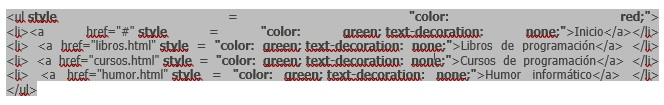

FORMAS DE APLICAR CSS
Ya hemos visto que existen estilos por defecto que aplican automáticamente los navegadores web cuando no hay estilos especificados, así como que podemos embeber código CSS en las propias etiquetas de HTML, “en línea”. Vamos a ver ahora dos formas adicionales de aplicar estilos CSS: en la parte inicial del documento HTML (aplicación de estilos interna o CSS interno) o en un archivo de extensión .css independiente del archivo HTML (aplicación de estilos externa o CSS externo).
En el epígrafe anterior vimos cómo aplicábamos estilos CSS en línea con este ejemplo:
CSS INTERNO
Dentro de las etiquetas < head > … < /head> incluiremos una etiqueta de apertura de declaración de estilos < style type=”text/css”>, a continuación colocaremos la definición de tantos estilos como deseemos y cerraremos la declaración con < /style>. En HTML 5 no es necesario especificar type =”text/css” pero de momento seguimos recomendando que se use esta sintaxis.
En nuestro código de ejemplo el cambio de los elementos del menú para que tengan el texto color verde y el icono o símbolo de viñeta de color rojo se haría de esta forma:

CSS EXTERNO
Aunque el CSS interno nos permite unificar en una declaración todos los estilos para un archivo html, seguimos teniendo el problema de tener que repetir la definición de estilos en la cabecera de cada uno de los archivos html de nuestro desarrollo web. Si el desarrollo tiene pocos archivos quizás sea menos problemático, pero cuando el desarrollo tiene cientos o miles de archivos sí se convierte en un verdadero problema, ya que cada vez que introdujéramos cambios habría que hacerlo en los cientos o miles de archivos de que constara el desarrollo.
Nosotros ubicaremos de momento el archivo CSS en la misma carpeta que el archivo HTML. En el archivo HTML tendremos lo siguiente:

No obstante, cuando trabajes con desarrollos web comprobarás que también son de uso frecuente la aplicación de estilos en línea o interna. En algunos casos esto es debido a desconocimiento de la persona que realiza el desarrollo o a la forma de funcionamiento del programa con el que se ha creado la página web, pero en otros casos obedece a que se ha querido hacer así.
En ocasiones se opta por hacer modificaciones en línea porque se buscan efectos puntuales que sólo se quieren aplicar en un punto concreto y en ningún otro. En ocasiones se opta por hacer definiciones CSS internas porque se quiere afectar muy puntualmente a un archivo y a ningún otro. Y en otros casos, se usan los estilos en línea o internos simplemente “por las prisas” o “por ser lo más rápido”.
Referencia: aprenderaprogramar.com. (s.f.). aprenderaprogramar.com . Obtenido de https://www.aprenderaprogramar.com/index.php?option=com_content&view=article&id=713:formas-de-aplicar-css-interno-y-externo-link-rel-y-archivos-de-extension-css-comentarios-css-cu01010d&catid=75&Itemid=203
Por último encontramos en este documento un manual para estilos con CSS en el diseño de sitios web.